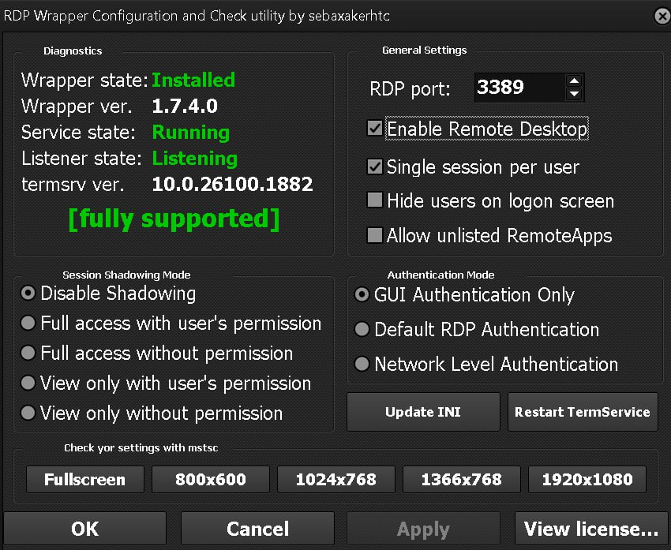
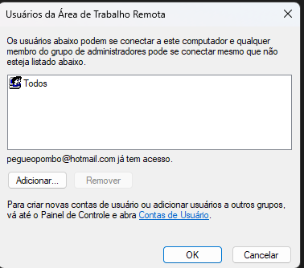
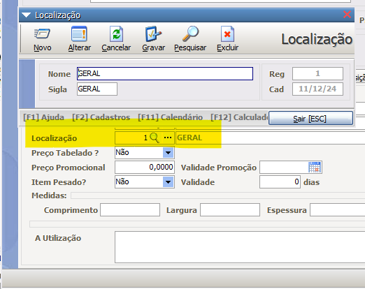
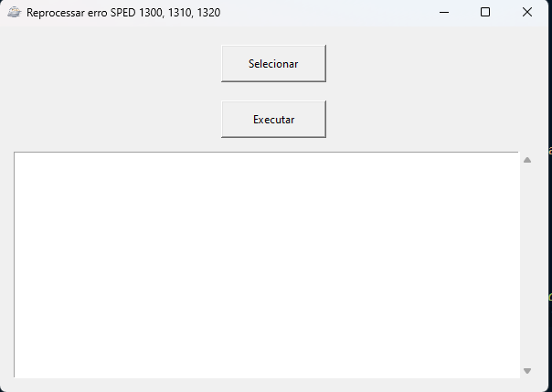

-
Como configurar o acesso TS?
Primeiro faça o download do RDP Wrapper.
Execute o instalador como ADMIN, certifique-se de que o antivírus não está bloqueando a execução do instalador:
Após a instalação, você verá uma tela igual a esta e que deve estar com tudo verde:  O próximo passo é criar usuários para cada estação no servidor no windows em "Gerenciador de usuários" e criar um usuário para cada estação. Depois de criar os usuários, você deve habilitar para "Todos" o acesso remoto no servidor em propriedade do computador e habilitar a opção "Permitir acesso remoto a este computador". :
-
Como colocar o departamento para balança no MGV6?
Cadastre dentro do item uma localização chamada "GERAL" e aplique em todos os itens. Aqui está um exemplo da tela de alteração de senha:

-
Como corrigir erro SPED 1300, 1310 e 1320?
Primeiro faça o download do Reprocessar sped.
Execute o arquivo como ADMIN, você verá uma tela igual a esta:

Clique em "Executar" e um novo txt será gerado com os erros corrigidos na pasta do executável. -
Como é o calculo de custo médio do sistema?
O cálculo é: novo_custo_medio = ((custo_medio_anterior * estoque_anterior) + (custo_atual * quantidade_comprada)) / novo_estoque.
-
Como gerar o novo IBPT?
Primeiro faça o download do Gerar IBPT.
Faça o download da nova versão do IBPT no site de olho no imposto, em seguida, renomeie o arquivo como 'ibpt.csv'. Execute o arquivo como ADMIN e selecione o arquivo 'ibpt.csv'.